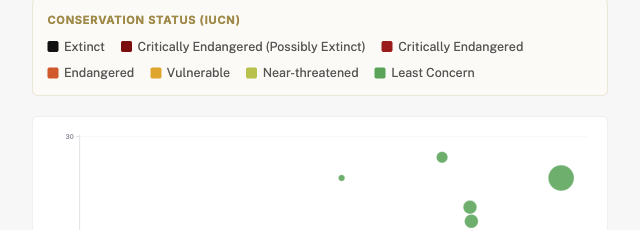
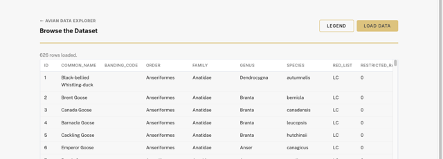
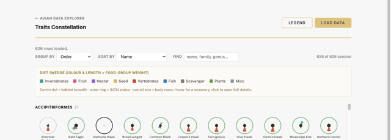
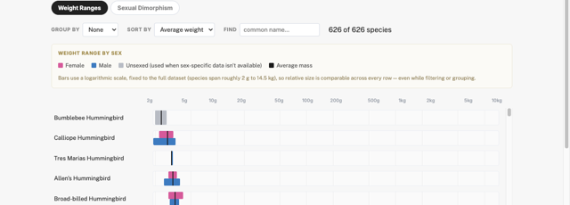
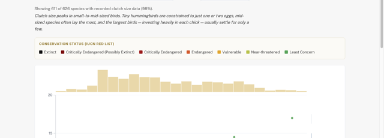
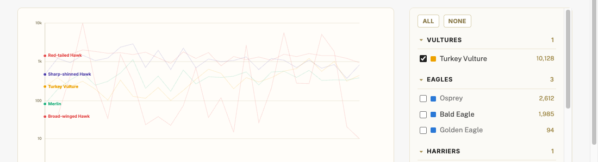
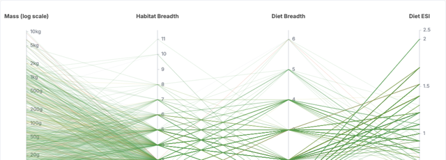
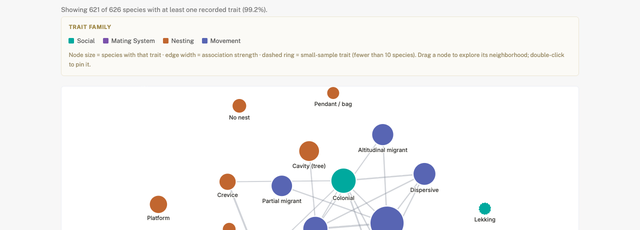

Avian Data Explorer
Learn about the wonderful and fascinating lives of birds by exploring our datasets

Species Bubble Explorer
Every species as a bubble sized by body mass —
pick what the x-axis, y-axis, and color mean and watch
clusters and outliers glide into place, or jump
straight to a hand-picked story.
Open →

Browse the Dataset
Explore every record and field in the BIRDS_BASE_DATA
table.
Open →

Traits Constellation
A radial visualization of diet, habitat, body mass, and
conservation status for every species.
Open →

Weights of Birds
Compare the relative mass of every species with
min–max weight bars for females, males, and
unsexed birds — then switch to the Sexual
Dimorphism tab to see how, and by how much, males and
females diverge in size.
Open →

Size & Life-History Scaling
See how body mass shapes a bird's breeding life —
clutch size, incubation, fledging, broods, and
productivity — with a brushable scatter plot.
Open →

Migration Trends
Watch 25 years of fall raptor counts from a real
hawk-watch site (Illinois Beach State Park Hawkwatch)
unfold season by season, in an animated Gapminder-style
trend chart.
Open →

Diet & Habitat Explorer
Brush across body mass, habitat breadth, diet
breadth, and specialization (ESI) to see how
generalists and specialists trace different paths
through every species' ecological profile —
then switch to the Habitat ↔ Diet Flow tab for an
illustrated Sankey diagram of which habitats and diets
pair up most.
Open →

Behavioral Trait-Syndrome Network
A force-directed graph of how social, mating, nesting,
and movement behaviors cluster together across
species — drag a node to explore its
neighborhood and see which traits travel as a
package.
Open →